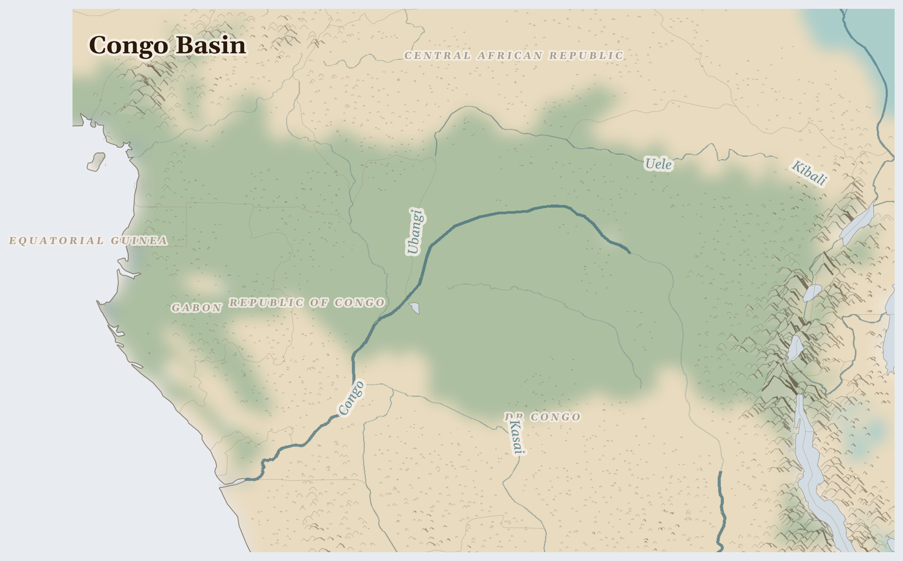

Congo Basin
Equatorial Guinea, DR Congo, Gabon and 2 more countries
Afrotropic
This is the second-biggest rainforest on Earth — so big that the trees make their own rain. A huge river, the Congo, curls through it like a brown ribbon. The forest is home to gorillas, forest elephants, and people who have known its paths for thousands of years.
How Life Works Here
The forest gives people almost everything: fish from the rivers, fruit and medicine from the trees, rich soil for cassava gardens. Deep under the ground there are special metals that the whole world wants — because they go inside phones and electric-car batteries. Maybe inside the phone in your house.
Pirogue fishing cooperatives along the Congo and Ubangi, Women fish smokers and market traders (dominate river commerce).
Smallholder farming families, Women managing food gardens and cassava processing.
small mines including 40,000+ children in Katanga cobalt mines, people with weapons in Kivu and Ituri controlling and taxing coltan sites, Comptoirs (trading houses) …
What Is Happening
The trouble is about those metals. Some people dig for them in deep, dangerous pits with their bare hands — even some children, who should be in school instead. In the east of the forest, people with weapons fight over the mines, and people have been killed and families have had to flee. But there are helpers: teachers running schools in the camps, church groups walking children home safely, and people working to make sure the diggers are paid fairly.
Something Wonderful
The Congo rainforest breathes. Its billions of leaves let out so much water that they make clouds, and the clouds make rain — the forest waters itself, and its rain travels to farms far away. When you see a cloud today, remember: somewhere a forest may have made it.
Let's Do Something Together
What Is Inside a Phone?
Hold a phone or tablet (turned off!). Inside are tiny pieces of metal from deep underground — coltan, copper, gold, and lithium. These metals come from mines in countries where people sometimes have to fight over who gets to dig them up. Everything we use is connected to someone far away.
- old phone or tablet (for holding)
For grown-ups
Consumer electronics contain conflict minerals sourced from artisanal mines in crisis regions. Cobalt from DRC, tantalum from central Africa, and lithium from contested territories link everyday devices to displacement and exploitation.
Let Us Pray Together
God, help the people who find the metals we use every day.
Leader: We pray for the displaced. For the millions driven from their homes.
All: Lord, hear our prayer.
Leader: We pray for those living under violence. For communities enduring fighting in this region.
All: Lord, hear our prayer.
Leader: We pray for DR Congo. Especially for DR Congo, facing the most severe convergence of crises in this region.
All: Lord, hear our prayer.
Leader: We pray for the helpers. For humanitarian workers and missionaries in Congo Basin.
All: Lord, hear our prayer.
My God, my God, why have you forsaken me, and are so far from my salvation, from the words of my distress? O my God, I cry in the daytime, but you do not answer;
Collect
Lord of all power and might, the author and giver of all good things: graft in our hearts the love of your name, increase in us true religion, nourish us with all goodness, and of your great mercy keep us in the same; through Jesus Christ your Son our Lord, who is alive and reigns with you, in the unity of the Holy Spirit, one God, now and for ever.
Amen.
Talk About It
Your family probably has a phone. If the metal inside it came from the Congo, what would you like to say to the person who dug it up?
One Thing We Can Do
Phones hide treasure! Ask a grown-up if your family has old phones in a drawer. Recycling one means less digging in the forest. When you find one, say a prayer for the children near the mines.